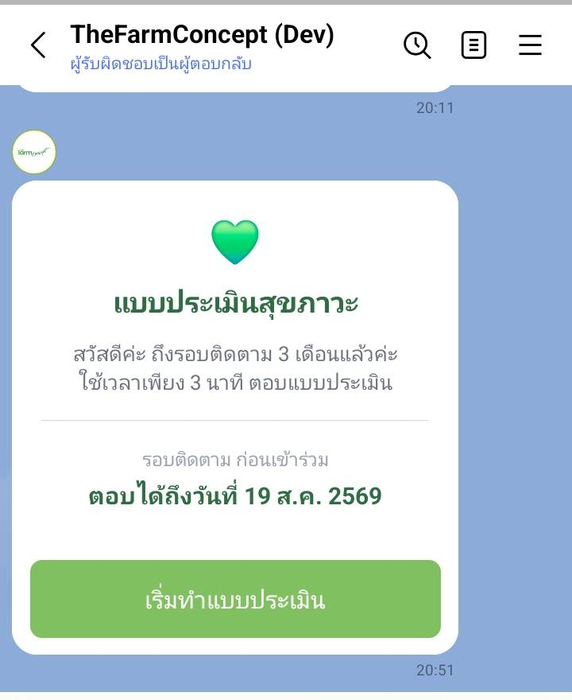

ผู้เข้าร่วม
รับแจ้งเตือนผ่าน LINE

| อยากได้แจ้งเตือน ต้องทำอะไร | ทำอย่างไร |
|---|---|
| เชื่อมบัญชี LINE ก่อน | ที่หน้าหลักของผู้เข้าร่วม เปิดสวิตช์ แจ้งเตือนรอบถัดไปผ่าน LINE ระบบจะพาไปเชื่อมให้ — ทำครั้งเดียว |
| ไม่อยากรับแล้ว | ปิดสวิตช์ตัวเดิม · คำตอบและประวัติที่มีอยู่ไม่หายไป |
| ไม่ได้เชื่อม LINE | ยังตอบได้ตามปกติ แค่ต้องเข้าเองผ่าน QR หรือ /health แล้วกรอกเบอร์กับรหัสบุคคล |
บัญชี LINE หนึ่งบัญชีผูกได้กับ คนเดียว — บ้านที่ใช้ไลน์ร่วมกัน ให้เชื่อมของคนที่จะรับแจ้งเตือนเป็นหลัก ที่เหลือเข้าด้วยเบอร์กับรหัสบุคคล
เจอปัญหาให้ทำอย่างไร
| อาการ | ให้ทำ |
|---|---|
| "บัญชี LINE นี้ถูกผูกกับผู้ใช้อื่นแล้ว" | เจ้าหน้าที่เปิดหน้ารายละเอียดของคนเดิม กดยกเลิกการเชื่อม แล้วให้เชื่อมใหม่ |
| กดปุ่ม LINE บน iPhone แล้วเข้าไม่ได้ | เกิดจากเปิดผ่านเบราว์เซอร์ในแอปกล้อง — กดปุ่ม เปิดใน Safari ที่ระบบแนะนำ แล้วลองใหม่ |
| เข้า LINE แล้วขึ้นว่าจะสลับไปรหัสอื่น | บัญชีนั้นผูกอยู่กับคนอื่น เลือกให้ตรงกับคนที่กำลังจะตอบ อย่ากดสลับมั่ว |